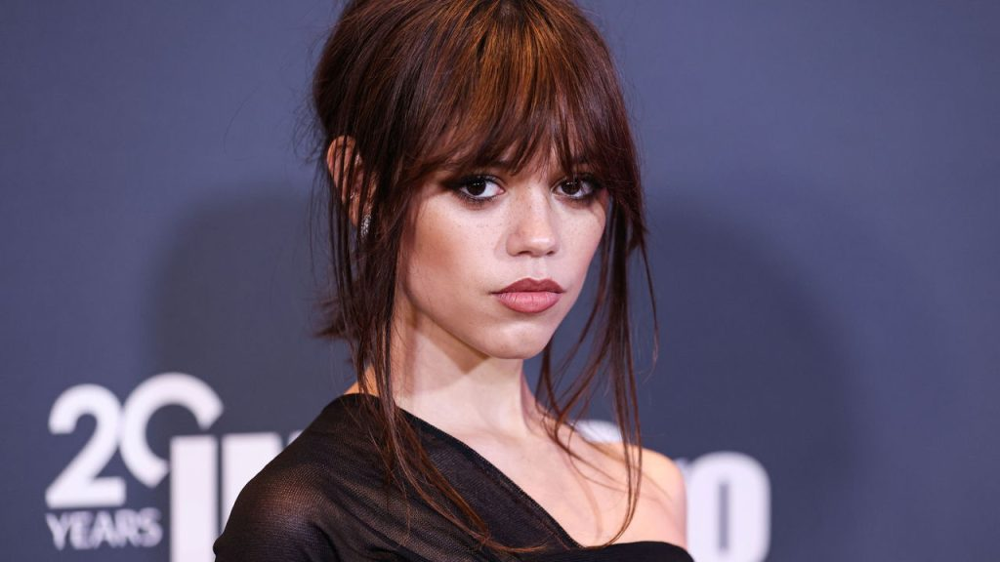
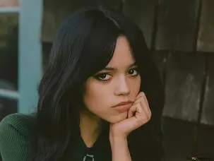
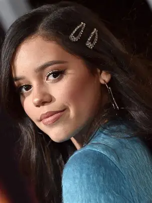
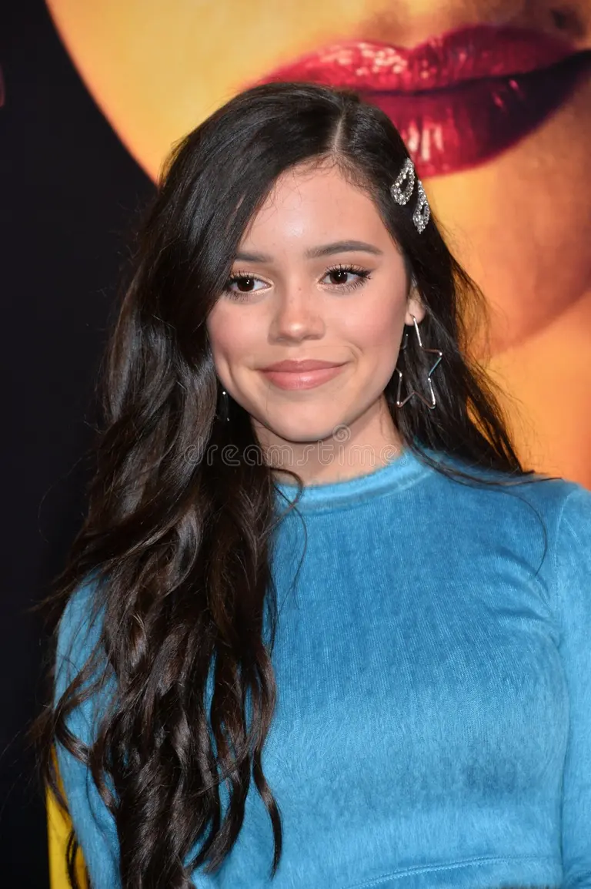
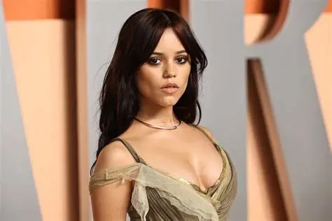

Klara and the Sun
Ficção científica de Taika Waititi, baseada no romance de Kazuo Ishiguro. Jenna é Klara, uma Amiga Artificial. Estreia nos EUA em 23/10/2026.
Fã-site não oficial
Conheça a trajetória de uma das atrizes mais talentosas da nova geração.
Uma das atrizes mais talentosas da nova geração de Hollywood, conhecida por sua versatilidade, carisma e dedicação ao cinema.
Jenna Ortega é uma atriz que se destacou por combinar presença de cena, intensidade emocional e uma forte conexão com o público jovem. Seu trabalho ganhou notoriedade por trazer personalidade e autenticidade para personagens marcantes.
Ao longo da carreira, ela foi reconhecida por interpretar papéis que exigem energia, delicadeza e impacto visual. Esse mix ajudou a consolidar sua imagem como uma das protagonistas mais comentadas da nova geração.
Este espaço foi criado como uma página de fãs para destacar sua trajetória, seus trabalhos e a forma como ela se tornou referência para muitas pessoas apaixonadas por cinema e televisão.
Filmes e Séries
Nascida em 27/09/2002
de Fãs no Mundo
Carreira Profissional
Produções de Destaque
Anos de Carreira
Indicações
Prêmios
Datas de lançamento podem mudar: confira sempre os canais oficiais.
Ficção científica de Taika Waititi, baseada no romance de Kazuo Ishiguro. Jenna é Klara, uma Amiga Artificial. Estreia nos EUA em 23/10/2026.
Aventura dirigida por J.J. Abrams, com Glen Powell e Samuel L. Jackson, nos cinemas IMAX.
—
A Netflix confirmou a terceira temporada em 2025. A data de estreia ainda não foi divulgada.
Comédia sombria de Cathy Yan, com Natalie Portman, exibida no festival Sundance em janeiro de 2026.
Conheça os principais trabalhos de Jenna Ortega durante sua carreira.
Ano: 2022–2025
Personagem: Wednesday Addams (e Goody)
Série da Netflix com direção de Tim Burton; Jenna também é produtora executiva.
Ano: 2026
Personagem: Klara
Drama de ficção científica de Taika Waititi.
Ano: 2025
Personagem: Ridley
Comédia de terror com Paul Rudd.
Ano: 2024
Personagem: Astrid Deetz
Sequência dirigida por Tim Burton; Astrid é filha de Lydia.
Ano: 2024
Personagem: Cairo Sweet
Thriller dramático ao lado de Martin Freeman.
Ano: 2023
Personagem: Tara Carpenter
Ghostface chega a Nova York.
Ano: 2023
Personagem: Mabel
Drama policial ambientado em Boston.
Ano: 2022
Personagem: Tara Carpenter
Quinto filme da franquia.
Ano: 2022
Personagem: Lorraine
Terror de Ti West e um dos filmes mais bem avaliados dela.
Ano: 2021
Personagem: Vada Cavell
Drama sobre as consequências de uma tragédia escolar.
Ano: 2019
Personagem: Ellie Alves
Participação na 2ª temporada do thriller da Netflix.
Ano: 2016–2018
Personagem: Harley Diaz
Série do Disney Channel; rendeu o Imagen Award de 2018.
Nenhum título encontrado.
Dos primeiros papéis ao estrelato global.
Começa a atuar ainda criança; em 2013 aparece em Iron Man 3 e Insidious: Chapter 2.
Protagoniza Stuck in the Middle (Harley Diaz) e vence o Imagen Award em 2018.
Entra na 2ª temporada de You e passa a escolher personagens mais sombrios.
Papel dramático de Vada Cavell, elogiado pela crítica.
Scream, X e Wednesday no mesmo ano; a mídia a apelida de “scream queen” da Geração Z.
Indicada ao Globo de Ouro, SAG e Emmy; Scream VI e Beetlejuice Beetlejuice.
2ª temporada de Wednesday (como produtora executiva) e Death of a Unicorn.
Klara and the Sun, The Gallerist e The Great Beyond.
Em Wednesday, Jenna também interpreta Goody Addams, ancestral da protagonista.
Dublou Brooklynn em Jurassic World: Camp Cretaceous.
Passou a atuar como produtora executiva de Wednesday na 2ª temporada.
Sua primeira indicação ao Globo de Ouro veio em 2023, por Wednesday.
Uma seleção de fotos que representam diferentes fases da carreira de Jenna Ortega.





A trajetória da atriz também é marcada por grande visibilidade, performances memoráveis e reconhecimento da crítica.
Protagonismo que elevou sua visibilidade global e consolidou seu lugar no mainstream.
Tem sido frequentemente destacada por performances que unem talento, presença e impacto emocional.
O reconhecimento se mantém com projetos de destaque em filmes, séries e cultura pop contemporânea.
Seleção dos principais reconhecimentos; a lista completa é maior.
Na Netflix. A 1ª temporada estreou em 2022 e a 2ª em duas partes, em agosto e setembro de 2025.
Não. Ela não voltou para o filme, segundo a imprensa especializada.
A renovação foi confirmada, mas a data de estreia ainda não foi anunciada.
Página criada para celebrar a carreira, os trabalhos e o impacto de Jenna Ortega no cinema e na televisão.
Este é um site não oficial, criado apenas como página de fãs para celebrar a trajetória de Jenna Ortega e compartilhar apreciação por seu trabalho.
Não é afiliado, patrocinado, aprovado ou endossado por Jenna Ortega, seus representantes, produtores, distribuidoras, plataformas ou empresas relacionadas.
Todo o conteúdo foi organizado para fins informativos, culturais e de entretenimento, sem intenção comercial e sem finalidade de substituir materiais oficiais.
Qualquer imagem, nome, marca, personagem ou material protegido por direitos autorais permanece propriedade de seus respectivos titulares. Este projeto é independente e respeita a existência de direitos de terceiros.